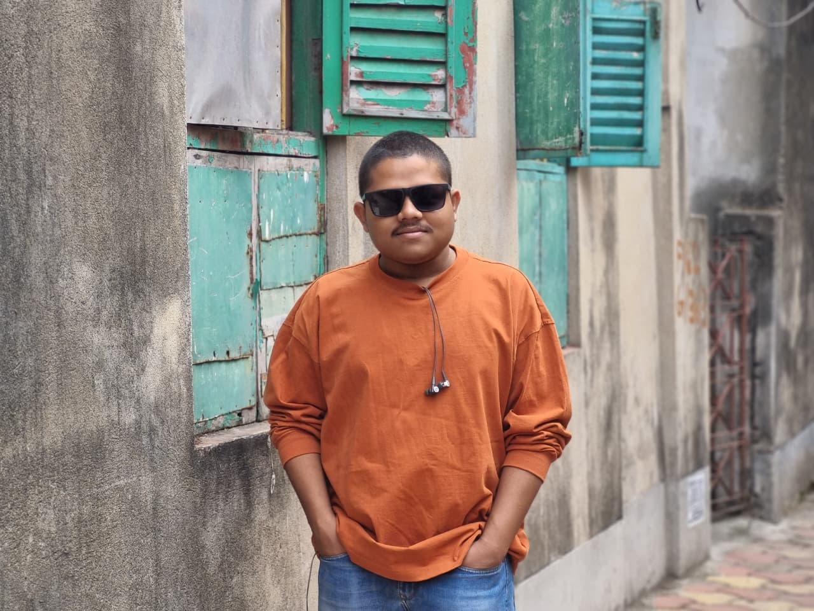

2021 — 2025
CIVIL ENGINEERING → COMPUTER SCIENCE @ IIIT HYDERABAD
I changed lanes.
Now I build in code.
I completed my B.E. in Civil Engineering at Jadavpur University, but I wanted to explore Computer Science more deeply. That curiosity turned into a deliberate switch, and in 2026 I joined IIIT Hyderabad for an M.Tech in CSIS. I’m now building depth in algorithms, systems and software development.

M.Tech CSIS @ IIITH C++ DSA OS
994
GATE CS AIR 2026
63
ISI GMR 2026
CIVIL → CS✦C++✦ALGORITHMS✦
OPERATING SYSTEMS✦IIIT HYDERABAD✦PYTHON✦
CIVIL → CS✦C++✦ALGORITHMS✦
OPERATING SYSTEMS✦IIIT HYDERABAD✦PYTHON✦
MY STORY
From Civil Engineering to Computer Science.
The turning point
Wanted to explore CS
GATE · PGEE · focused learning2026 — Current
M.Tech in CSIS
IIIT HyderabadI did my B.E. in Civil Engineering at Jadavpur University. During that journey, I became increasingly curious about Computer Science and wanted to understand how software, algorithms and systems actually work.
I decided to pursue that curiosity seriously. My 2026 results in GATE Computer Science, the ISI Admission Test and IIIT Hyderabad PGEE marked that transition, and I joined IIIT Hyderabad for an M.Tech in CSIS.
Today I’m focused on strengthening my foundations in algorithms, operating systems, computer networks and software development — and enjoying the process of learning a new field.
EDUCATION
The places that shaped my journey.
Three institutions, two disciplines, and one increasingly strong pull toward Computer Science.
 CURRENT
CURRENT
2026 — Current
Master of Technology · CSIS
IIIT Hyderabad
International Institute of Information Technology, Hyderabad. This is where I am now exploring Computer Science formally and building depth in systems, algorithms and software.
Visit institute ↗Campus photo: Pinakpani / Wikimedia Commons, CC BY-SA.

2021 — 2025
Bachelor of Engineering · Civil Engineering
Jadavpur University
Kolkata · CGPA: 6.81 / 10.00. I completed my B.E. in Civil Engineering here before deciding to make a deliberate move toward Computer Science.
Visit university ↗Gate photo: Pinakpani / Wikimedia Commons, CC BY-SA 4.0.

2018 — 2021
Secondary & Higher Secondary
Ramakrishna Mission Vidyabhavan
Midnapore, West Bengal. Class XII: 96.2% · Class X: 96.57%. My school years here built the academic foundation that came before engineering and CS.
Visit school ↗Campus image source: Ramakrishna Mission Vidyabhavan public profile.
ACHIEVEMENTS
Selected academic milestones
GATE CS · 2026
All India Rank 994
Computer Science and Information Technology.
ISI Admission Test · 2026
General Merit Rank 63
MTech in Computer Science and Cryptology & Security.
IIIT Hyderabad PGEE · 2026
All India Rank 151
Post Graduate Entrance Examination.
WBJEE · 2021
State Rank 2593
Among 100,000+ candidates; admitted to Jadavpur University.
JBNSTS · 2019
Junior Scholar
Awarded the Jagadis Bose National Science Talent Search Scholarship.
SKILLS
Tools and foundations I work with
Programming
C++PythonSQL
Core CS & DSA
Data StructuresAlgorithms
Theoretical Foundations
Operating SystemsComputer NetworksComputer Architecture
Developer Tools
GitGitHubVS Code
OFF THE CLOCK
Things I’m into when I’m not debugging something.
A mix of games, sport, watching people think several moves ahead, and occasionally putting pencil to paper.
 01
01
Gaming
FIFA and Call of Duty are my usual picks when I want to switch gears and play something.
 02
02
Chess
I like watching chess even though I can’t really play it myself. Spectator mode is enough for now.
 03
03
Table Tennis
I occasionally play table tennis — not a daily thing, but always fun when I get the chance.
 04
04
Watching Football
Football is one of the sports I genuinely enjoy following and watching.
 05
05
Sketching
I also like sketching — a quieter creative break from screens and coursework.
CURRENTLY EXPLORING
The CS rabbit holes I’m happily going down.
Algorithms & Data Structures
Strengthening problem-solving fundamentals through data structures, algorithms and object-oriented programming.
Systems Foundations
Studying operating systems, computer networks and computer architecture to understand how software interacts with the underlying system.
Software Development
Working with C++, Python, SQL, Git, GitHub and VS Code while developing stronger software-development habits.
INTERESTS & HOBBIES
What keeps me curious
Technical interests
Algorithms
Operating Systems
Computer Networks
Software Development
Developer Tools
Beyond coursework
Learning a new field by actually building things.
I enjoy exploring tools, understanding how systems work and turning unfamiliar topics into something I can implement and explain.
CONTACT
Send me a message.
Use this form to get in touch. Leave your email below so I can reply to you.